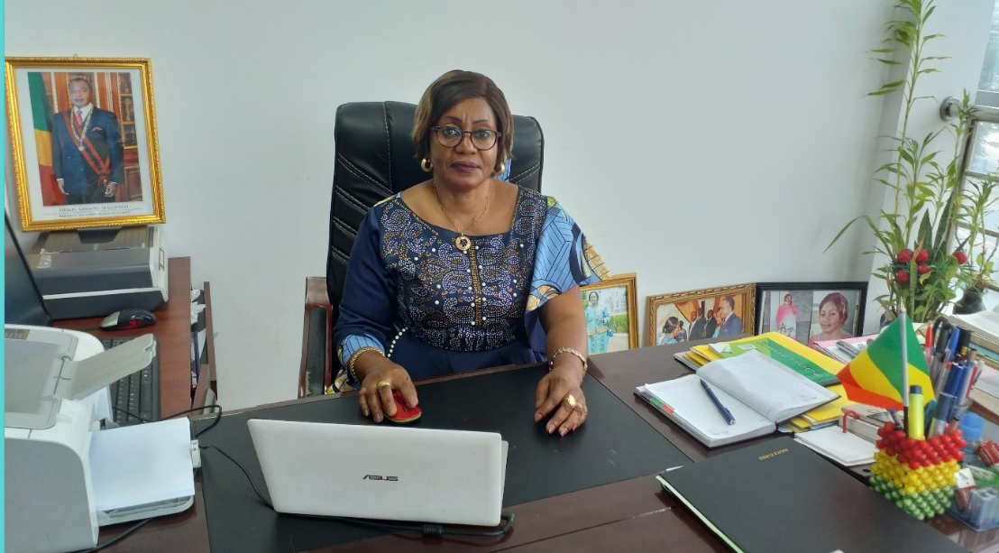

Qui sommes-nous ?
La Direction Générale de la Sécurité Sociale est une structure technique du Ministère chargée d'assister le Ministre dans la conception, l'élaboration, la mise en œuvre et le suivi de la politique nationale de sécurité sociale.
Elle contribue à la définition des orientations nationales en matière de sécurité sociale et participe à la mise en place d'un système de protection sociale adapté aux besoins des populations.
La DGSS intervient également dans l'élaboration des textes législatifs et réglementaires, la coordination des actions, le suivi des organismes de sécurité sociale et l'accompagnement des réformes dans le domaine de la protection sociale.
Nos principales attributions
- Politique nationale de sécurité sociale : participer à la conception, à l'élaboration et au suivi de la politique nationale de sécurité sociale.
- Textes législatifs et réglementaires : contribuer à l'élaboration, à la mise à jour et au suivi de l'application des textes relatifs à la sécurité sociale.
- Coordination : coordonner et suivre les actions menées dans le domaine de la sécurité sociale avec les structures et organismes concernés.
- Organismes de sécurité sociale : assurer le suivi des organismes et des structures intervenant dans le domaine de la sécurité sociale.
- Réformes sociales : contribuer à la préparation, au suivi et à l'accompagnement des réformes relatives à la protection sociale.
- Coopération : participer à la coopération nationale et internationale dans le domaine de la sécurité sociale.
- Protection sociale : contribuer à l'amélioration de la couverture sociale et au renforcement de la protection des populations contre les risques sociaux.
Les domaines de la sécurité sociale
- Prestations familiales : contribuer au développement des mécanismes de protection des familles et des enfants.
- Retraite et invalidité : participer au suivi des dispositifs de protection des personnes âgées et des personnes en situation d'invalidité.
- Accidents du travail et maladies professionnelles : contribuer au renforcement des mécanismes de protection des travailleurs contre les risques professionnels.
- Maternité : contribuer au développement des dispositifs de protection liés à la maternité.
- Assurance maladie : participer à l'amélioration des mécanismes de couverture et de prise en charge des risques liés à la maladie.
- Action sociale : contribuer à la protection et à l'accompagnement des personnes et des groupes vulnérables.
Notre rôle institutionnel
- Assister le Ministre dans la conception et la mise en œuvre de la politique nationale de sécurité sociale.
- Élaborer et contribuer à l'application des textes législatifs et réglementaires relatifs à la sécurité sociale.
- Assurer le suivi et l'évaluation des politiques et des programmes de sécurité sociale.
- Coordonner les actions des différents acteurs intervenant dans le domaine de la protection sociale.
- Suivre les activités des organismes et structures de sécurité sociale.
- Participer à la mobilisation des ressources nécessaires au développement de la protection sociale.
- Contribuer au développement d'une sécurité sociale moderne, accessible, équitable et adaptée aux besoins des populations.

Clarisse IVOUTOUHI née YIRAMA PEMBA
Directrice Générale de la Sécurité SocialeNos Directeurs Centraux
Barthélemy MANGUEMBI
Directeur de l'Administration, des Équipements et des Finances
Bruno Jérémi OKOUNGA
Directeur des Études, du Développement et de la Prospective
Félix MASSENGO
Directeur de la Réglementation et des Relations Internationales
Lestiane Abi Derine LOUEMBE
Directrice de la Réforme, de l'Assistance et de la Promotion de la Sécurité SocialeMoteur de recherche
| Titre | Libellé |
|---|
{kind=link}